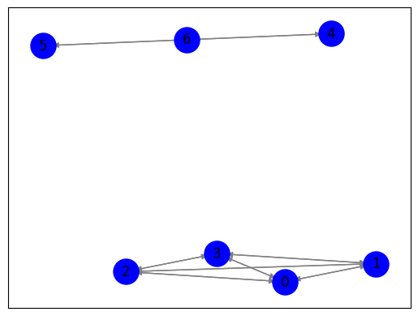

Closeness centrality#
Langkah 1: Crawl data judul berita dan isi berita dari Kompas.com#
import requests
from bs4 import BeautifulSoup
from datetime import datetime, timedelta
# URL yang akan di-crawl
base_url = "https://indeks.kompas.com/terpopuler/?site=all&date="
start_date = "2023-10-01"
end_date = "2023-10-30"
# Membuat list untuk menyimpan data
data = []
# Fungsi untuk mengambil data berita dari halaman web
def crawl_kompas_news(url):
response = requests.get(url)
soup = BeautifulSoup(response.text, "html.parser")
# Cari semua elemen dengan kelas 'article__list__title'
news_elements = soup.find_all("div", class_="article__list__title")
for element in news_elements:
# Dapatkan judul dan tautan berita
title = element.h3.a.text
link = element.h3.a["href"]
# Crawl isi berita dari tautan judul
article_text = crawl_kompas_article(link)
# Tambahkan data ke list
data.append({"Judul": title, "Isi Berita": article_text})
# Fungsi untuk mengambil isi berita dari tautan judul berita
def crawl_kompas_article(article_url):
response = requests.get(article_url)
soup = BeautifulSoup(response.text, "html.parser")
# Cari elemen dengan kelas 'read__content'
content_element = soup.find("div", class_="read__content")
# Dapatkan isi berita
article_text = content_element.get_text()
return article_text
# Loop untuk tanggal dari start_date hingga end_date
current_date = datetime.strptime(start_date, "%Y-%m-%d") # Konversi tanggal awal ke objek datetime
end_date = datetime.strptime(end_date, "%Y-%m-%d") # Konversi tanggal akhir ke objek datetime
while current_date <= end_date:
current_url = f"{base_url}{current_date.strftime('%Y-%m-%d')}" # Menggunakan strftime untuk format tanggal
print(f"Mengambil berita untuk tanggal {current_date.strftime('%Y-%m-%d')}")
crawl_kompas_news(current_url)
# Lanjut ke tanggal berikutnya
current_date += timedelta(days=1)
# Membuat dataframe pandas dari data
df = pd.DataFrame(data)
# Menyimpan dataframe ke dalam file CSV
df.to_csv("berita_kompas.csv", index=False)
Mengambil berita untuk tanggal 2023-10-01
---------------------------------------------------------------------------
KeyboardInterrupt Traceback (most recent call last)
<ipython-input-1-e3e09fdbeb9d> in <cell line: 49>()
50 current_url = f"{base_url}{current_date.strftime('%Y-%m-%d')}" # Menggunakan strftime untuk format tanggal
51 print(f"Mengambil berita untuk tanggal {current_date.strftime('%Y-%m-%d')}")
---> 52 crawl_kompas_news(current_url)
53
54 # Lanjut ke tanggal berikutnya
<ipython-input-1-e3e09fdbeb9d> in crawl_kompas_news(url)
25
26 # Crawl isi berita dari tautan judul
---> 27 article_text = crawl_kompas_article(link)
28
29 # Tambahkan data ke list
<ipython-input-1-e3e09fdbeb9d> in crawl_kompas_article(article_url)
32 # Fungsi untuk mengambil isi berita dari tautan judul berita
33 def crawl_kompas_article(article_url):
---> 34 response = requests.get(article_url)
35 soup = BeautifulSoup(response.text, "html.parser")
36
/usr/local/lib/python3.10/dist-packages/requests/api.py in get(url, params, **kwargs)
71 """
72
---> 73 return request("get", url, params=params, **kwargs)
74
75
/usr/local/lib/python3.10/dist-packages/requests/api.py in request(method, url, **kwargs)
57 # cases, and look like a memory leak in others.
58 with sessions.Session() as session:
---> 59 return session.request(method=method, url=url, **kwargs)
60
61
/usr/local/lib/python3.10/dist-packages/requests/sessions.py in request(self, method, url, params, data, headers, cookies, files, auth, timeout, allow_redirects, proxies, hooks, stream, verify, cert, json)
587 }
588 send_kwargs.update(settings)
--> 589 resp = self.send(prep, **send_kwargs)
590
591 return resp
/usr/local/lib/python3.10/dist-packages/requests/sessions.py in send(self, request, **kwargs)
701
702 # Send the request
--> 703 r = adapter.send(request, **kwargs)
704
705 # Total elapsed time of the request (approximately)
/usr/local/lib/python3.10/dist-packages/requests/adapters.py in send(self, request, stream, timeout, verify, cert, proxies)
484
485 try:
--> 486 resp = conn.urlopen(
487 method=request.method,
488 url=url,
/usr/local/lib/python3.10/dist-packages/urllib3/connectionpool.py in urlopen(self, method, url, body, headers, retries, redirect, assert_same_host, timeout, pool_timeout, release_conn, chunked, body_pos, preload_content, decode_content, **response_kw)
789
790 # Make the request on the HTTPConnection object
--> 791 response = self._make_request(
792 conn,
793 method,
/usr/local/lib/python3.10/dist-packages/urllib3/connectionpool.py in _make_request(self, conn, method, url, body, headers, retries, timeout, chunked, response_conn, preload_content, decode_content, enforce_content_length)
535 # Receive the response from the server
536 try:
--> 537 response = conn.getresponse()
538 except (BaseSSLError, OSError) as e:
539 self._raise_timeout(err=e, url=url, timeout_value=read_timeout)
/usr/local/lib/python3.10/dist-packages/urllib3/connection.py in getresponse(self)
459
460 # Get the response from http.client.HTTPConnection
--> 461 httplib_response = super().getresponse()
462
463 try:
/usr/lib/python3.10/http/client.py in getresponse(self)
1373 try:
1374 try:
-> 1375 response.begin()
1376 except ConnectionError:
1377 self.close()
/usr/lib/python3.10/http/client.py in begin(self)
316 # read until we get a non-100 response
317 while True:
--> 318 version, status, reason = self._read_status()
319 if status != CONTINUE:
320 break
/usr/lib/python3.10/http/client.py in _read_status(self)
277
278 def _read_status(self):
--> 279 line = str(self.fp.readline(_MAXLINE + 1), "iso-8859-1")
280 if len(line) > _MAXLINE:
281 raise LineTooLong("status line")
/usr/lib/python3.10/socket.py in readinto(self, b)
703 while True:
704 try:
--> 705 return self._sock.recv_into(b)
706 except timeout:
707 self._timeout_occurred = True
/usr/lib/python3.10/ssl.py in recv_into(self, buffer, nbytes, flags)
1272 "non-zero flags not allowed in calls to recv_into() on %s" %
1273 self.__class__)
-> 1274 return self.read(nbytes, buffer)
1275 else:
1276 return super().recv_into(buffer, nbytes, flags)
/usr/lib/python3.10/ssl.py in read(self, len, buffer)
1128 try:
1129 if buffer is not None:
-> 1130 return self._sslobj.read(len, buffer)
1131 else:
1132 return self._sslobj.read(len)
KeyboardInterrupt:
df["Isi Berita"] = df["Isi Berita"].str.replace('\n', '')
df
| Judul | Isi Berita | |
|---|---|---|
| 0 | Putra Megawati Sopiri Ganjar dan Rombongan Mel... | JAKARTA, KOMPAS.com - Putra Megawati Soekarnop... |
| 1 | Ada Dokumen Hendak Dimusnahkan Saat KPK Geleda... | JAKARTA, KOMPAS.com - Komisi Pemberantasan Kor... |
| 2 | Kecelakaan Beruntun di Tol Semarang, Kendaraan... | KOMPAS.com - Enam kendaraan terlibat kecelakaa... |
| 3 | Jessica Wongso Dilarang Wawancara di Film Doku... | KOMPAS.com - Salah satu adegan dalam film doku... |
| 4 | Jika Gibran Dipinang Prabowo, Puan Sebut PDI-P... | JAKARTA, KOMPAS.com - Ketua DPP PDI-P Bidang P... |
| ... | ... | ... |
| 700 | 5 Fakta Turis Asing Ingin Dekati Kawah hingga ... | KOMPAS.com - Seorang wisatawan asing di kawasa... |
| 701 | TKN Jokowi-Ma'ruf Sebut Ada Bendera HTI di Kam... | JAKARTA, KOMPAS.com - Anggota Dewan Pengarah B... |
| 702 | Cemburu Jadi Motif Pelaku Bunuh Pria yang Jena... | BATAM, KOMPAS.com - Kasus pembunuhan pria yang... |
| 703 | Video: Detik-detik Jatuhnya Meteor 10 Kali Bom... | KOMPAS.com - 18 Desember tahun lalu, sebuah me... |
| 704 | Survei Charta Politika: Elektabilitas PSI Tert... | JAKARTA KOMPAS.com - Survei terbaru Charta Pol... |
705 rows × 2 columns
df.to_csv("Data_berita.csv", index=False)
Langkah 2: Ekstraksi Kalimat (NLTK)#
import pandas as pd
df = pd.read_csv("/content/drive/MyDrive/ppw/tugas/data_tugas4/Data_berita.csv")
df
| Judul | Isi Berita | |
|---|---|---|
| 0 | Putra Megawati Sopiri Ganjar dan Rombongan Mel... | JAKARTA, KOMPAS.com - Putra Megawati Soekarnop... |
| 1 | Ada Dokumen Hendak Dimusnahkan Saat KPK Geleda... | JAKARTA, KOMPAS.com - Komisi Pemberantasan Kor... |
| 2 | Kecelakaan Beruntun di Tol Semarang, Kendaraan... | KOMPAS.com - Enam kendaraan terlibat kecelakaa... |
| 3 | Jessica Wongso Dilarang Wawancara di Film Doku... | KOMPAS.com - Salah satu adegan dalam film doku... |
| 4 | Jika Gibran Dipinang Prabowo, Puan Sebut PDI-P... | JAKARTA, KOMPAS.com - Ketua DPP PDI-P Bidang P... |
| ... | ... | ... |
| 700 | 5 Fakta Turis Asing Ingin Dekati Kawah hingga ... | KOMPAS.com - Seorang wisatawan asing di kawasa... |
| 701 | TKN Jokowi-Ma'ruf Sebut Ada Bendera HTI di Kam... | JAKARTA, KOMPAS.com - Anggota Dewan Pengarah B... |
| 702 | Cemburu Jadi Motif Pelaku Bunuh Pria yang Jena... | BATAM, KOMPAS.com - Kasus pembunuhan pria yang... |
| 703 | Video: Detik-detik Jatuhnya Meteor 10 Kali Bom... | KOMPAS.com - 18 Desember tahun lalu, sebuah me... |
| 704 | Survei Charta Politika: Elektabilitas PSI Tert... | JAKARTA KOMPAS.com - Survei terbaru Charta Pol... |
705 rows × 2 columns
berita = df['Isi Berita'].iloc[0]
print(berita)
JAKARTA, KOMPAS.com - Putra Megawati Soekarnoputri, sekaligus Ketua DPP PDI-P M Prananda Prabowo atau akrab disapa Nanan tampak menyopiri bakal calon presiden (bacapres) PDI-P Ganjar Pranowo, di hari kedua Rakernas IV PDI-P, Sabtu (30/9/2023).Saat itu Nanan mengemudikan mobil golf yang ditumpangi Ganjar di atas karpet merah.Selain Ganjar, tampak Ketua Umum PDI-P Megawati Soekarnoputri dan Sekjen Hasto Kristiyanto.Ganjar dan Hasto duduk bersebelahan di kursi tengah. Sementara Megawati menemani Nanan duduk di kursi depan.Baca juga: Hari Kedua Rakernas IV PDI-P: Megawati Beri Arahan Tertutup, Ketua KPU dan Ketua KPK Jadi NarasumberDi kursi belakang Ganjar dan Hasto tampak Mindo Sianipar yang menjabat sebagai Ketua Bidang Koperasi dan UMKM di DPP PDI-P.Mobil golf itu berjalan pelan di atas karpet merah arena Rakernas IV PDI-P di Jiexpo Kemayoran.Megawati, Ganjar dan Hasto sesekali menengok ke arah sekeliling sembari melempar senyum. Sedangkan Nanan, terlihat fokus pada jalur yang dilalui mobil golf tersebut.Momen kebersamaan antara Ganjar dan keluarga besar PDI-P sudah ditunjukkan berulang kali dalam Rakernas IV kali ini.Baca juga: Kehadiran Sandiaga dan Mahfud dalam Rakernas PDI-P di Tengah Isu Jadi Cawapres GanjarSebelumnya, pada hari pertama Rakernas IV PDI-P, kebersamaan itu terjadi ketika Ganjar menjemput Presiden Joko Widodo (Jokowi) yang juga kader PDI-P ketika tiba hingga akhir menghadiri pembukaan Rakernas.Ganjar mulanya datang terlebih dulu di arena Rakernas. Ia kemudian menyambut kedatangan Megawati didampingi istrinya, Siti Atiqoh.Kemudian, momen kebersamaan semakin terlihat ketika Ganjar dan Jokowi menggandeng tangan Megawati ketika hendak menuruni anak tangga panggung Rakernas.Baca juga: Momen Jokowi Bisiki Ganjar di Tengah Rakernas PDI-P Sekjen PDI-P Hasto Kristiyanto mengatakan, hal ini menjadi bentuk kekompakan antara keluarga Megawati dan PDI-P.Momen ini juga menjauhkan berbagai spekulasi yang terjadi beberapa waktu terakhir. Namun Hasto tak membeberkan lebih lengkap berbagai spekulasi yang dimaksud.Dapatkan update berita pilihan dan breaking news setiap hari dari Kompas.com. Mari bergabung di Grup Telegram "Kompas.com News Update", caranya klik link https://t.me/kompascomupdate, kemudian join. Anda harus install aplikasi Telegram terlebih dulu di ponsel.
#install library
!pip install sastrawi
!pip install swifter
!pip install gensim
Collecting sastrawi
Downloading Sastrawi-1.0.1-py2.py3-none-any.whl (209 kB)
?25l ━━━━━━━━━━━━━━━━━━━━━━━━━━━━━━━━━━━━━━━━ 0.0/209.7 kB ? eta -:--:--
━━━━━━━━━━━━━━━━━━━━━━━╺━━━━━━━━━━━━━━━━ 122.9/209.7 kB 3.8 MB/s eta 0:00:01
━━━━━━━━━━━━━━━━━━━━━━━━━━━━━━━━━━━━━━━━ 209.7/209.7 kB 4.5 MB/s eta 0:00:00
?25hInstalling collected packages: sastrawi
Successfully installed sastrawi-1.0.1
Collecting swifter
Downloading swifter-1.4.0.tar.gz (1.2 MB)
━━━━━━━━━━━━━━━━━━━━━━━━━━━━━━━━━━━━━━━━ 1.2/1.2 MB 15.6 MB/s eta 0:00:00
?25h Preparing metadata (setup.py) ... ?25l?25hdone
Requirement already satisfied: pandas>=1.0.0 in /usr/local/lib/python3.10/dist-packages (from swifter) (1.5.3)
Requirement already satisfied: psutil>=5.6.6 in /usr/local/lib/python3.10/dist-packages (from swifter) (5.9.5)
Requirement already satisfied: dask[dataframe]>=2.10.0 in /usr/local/lib/python3.10/dist-packages (from swifter) (2023.8.1)
Requirement already satisfied: tqdm>=4.33.0 in /usr/local/lib/python3.10/dist-packages (from swifter) (4.66.1)
Requirement already satisfied: click>=8.0 in /usr/local/lib/python3.10/dist-packages (from dask[dataframe]>=2.10.0->swifter) (8.1.7)
Requirement already satisfied: cloudpickle>=1.5.0 in /usr/local/lib/python3.10/dist-packages (from dask[dataframe]>=2.10.0->swifter) (2.2.1)
Requirement already satisfied: fsspec>=2021.09.0 in /usr/local/lib/python3.10/dist-packages (from dask[dataframe]>=2.10.0->swifter) (2023.6.0)
Requirement already satisfied: packaging>=20.0 in /usr/local/lib/python3.10/dist-packages (from dask[dataframe]>=2.10.0->swifter) (23.2)
Requirement already satisfied: partd>=1.2.0 in /usr/local/lib/python3.10/dist-packages (from dask[dataframe]>=2.10.0->swifter) (1.4.1)
Requirement already satisfied: pyyaml>=5.3.1 in /usr/local/lib/python3.10/dist-packages (from dask[dataframe]>=2.10.0->swifter) (6.0.1)
Requirement already satisfied: toolz>=0.10.0 in /usr/local/lib/python3.10/dist-packages (from dask[dataframe]>=2.10.0->swifter) (0.12.0)
Requirement already satisfied: importlib-metadata>=4.13.0 in /usr/local/lib/python3.10/dist-packages (from dask[dataframe]>=2.10.0->swifter) (6.8.0)
Requirement already satisfied: python-dateutil>=2.8.1 in /usr/local/lib/python3.10/dist-packages (from pandas>=1.0.0->swifter) (2.8.2)
Requirement already satisfied: pytz>=2020.1 in /usr/local/lib/python3.10/dist-packages (from pandas>=1.0.0->swifter) (2023.3.post1)
Requirement already satisfied: numpy>=1.21.0 in /usr/local/lib/python3.10/dist-packages (from pandas>=1.0.0->swifter) (1.23.5)
Requirement already satisfied: zipp>=0.5 in /usr/local/lib/python3.10/dist-packages (from importlib-metadata>=4.13.0->dask[dataframe]>=2.10.0->swifter) (3.17.0)
Requirement already satisfied: locket in /usr/local/lib/python3.10/dist-packages (from partd>=1.2.0->dask[dataframe]>=2.10.0->swifter) (1.0.0)
Requirement already satisfied: six>=1.5 in /usr/local/lib/python3.10/dist-packages (from python-dateutil>=2.8.1->pandas>=1.0.0->swifter) (1.16.0)
Building wheels for collected packages: swifter
Building wheel for swifter (setup.py) ... ?25l?25hdone
Created wheel for swifter: filename=swifter-1.4.0-py3-none-any.whl size=16507 sha256=9a1862fe1253f715fe05ba87837a8d7168e8d798641ef6b8d9adbfa358f616a5
Stored in directory: /root/.cache/pip/wheels/e4/cf/51/0904952972ee2c7aa3709437065278dc534ec1b8d2ad41b443
Successfully built swifter
Installing collected packages: swifter
Successfully installed swifter-1.4.0
Requirement already satisfied: gensim in /usr/local/lib/python3.10/dist-packages (4.3.2)
Requirement already satisfied: numpy>=1.18.5 in /usr/local/lib/python3.10/dist-packages (from gensim) (1.23.5)
Requirement already satisfied: scipy>=1.7.0 in /usr/local/lib/python3.10/dist-packages (from gensim) (1.11.3)
Requirement already satisfied: smart-open>=1.8.1 in /usr/local/lib/python3.10/dist-packages (from gensim) (6.4.0)
import numpy as np
from nltk.corpus import stopwords
import re
import nltk
nltk.download('stopwords')
nltk.download('wordnet')
nltk.download('punkt')
from Sastrawi.Stemmer.StemmerFactory import StemmerFactory
from nltk.tokenize import sent_tokenize, word_tokenize
from sklearn.feature_extraction.text import TfidfVectorizer
[nltk_data] Downloading package stopwords to /root/nltk_data...
[nltk_data] Unzipping corpora/stopwords.zip.
[nltk_data] Downloading package wordnet to /root/nltk_data...
[nltk_data] Downloading package punkt to /root/nltk_data...
[nltk_data] Unzipping tokenizers/punkt.zip.
Langkah 3: TF IDF#
kalimat = nltk.sent_tokenize(berita)
tfidf_vectorizer = TfidfVectorizer()
tfidf_matrix = tfidf_vectorizer.fit_transform(kalimat)
terms = tfidf_vectorizer.get_feature_names_out()
for i, sentence in enumerate(kalimat):
print(f"\nKalimat {i+1}: {sentence}")
for j, term in enumerate(terms):
tfidf_value = tfidf_matrix[i, j]
if tfidf_value > 0:
print(f"{term}: {tfidf_value:.4f}")
Kalimat 1: JAKARTA, KOMPAS.com - Putra Megawati Soekarnoputri, sekaligus Ketua DPP PDI-P M Prananda Prabowo atau akrab disapa Nanan tampak menyopiri bakal calon presiden (bacapres) PDI-P Ganjar Pranowo, di hari kedua Rakernas IV PDI-P, Sabtu (30/9/2023).Saat itu Nanan mengemudikan mobil golf yang ditumpangi Ganjar di atas karpet merah.Selain Ganjar, tampak Ketua Umum PDI-P Megawati Soekarnoputri dan Sekjen Hasto Kristiyanto.Ganjar dan Hasto duduk bersebelahan di kursi tengah.
2023: 0.1251
30: 0.1251
akrab: 0.1251
atas: 0.1039
atau: 0.1251
bacapres: 0.1251
bakal: 0.1251
bersebelahan: 0.1251
calon: 0.1251
com: 0.0888
dan: 0.1351
di: 0.1783
disapa: 0.1251
ditumpangi: 0.1251
dpp: 0.1039
duduk: 0.1039
ganjar: 0.3083
golf: 0.0888
hari: 0.0771
hasto: 0.1542
itu: 0.0888
iv: 0.0888
jakarta: 0.1251
karpet: 0.1039
kedua: 0.1039
ketua: 0.2077
kompas: 0.0888
kristiyanto: 0.1039
kursi: 0.1039
megawati: 0.1776
mengemudikan: 0.1251
menyopiri: 0.1251
merah: 0.1039
mobil: 0.0888
nanan: 0.1776
pdi: 0.3083
prabowo: 0.1251
prananda: 0.1251
pranowo: 0.1251
presiden: 0.1039
putra: 0.1251
rakernas: 0.0771
saat: 0.1251
sabtu: 0.1251
sekaligus: 0.1251
sekjen: 0.1039
selain: 0.1251
soekarnoputri: 0.2503
tampak: 0.2077
tengah: 0.0888
umum: 0.1251
yang: 0.0675
Kalimat 2: Sementara Megawati menemani Nanan duduk di kursi depan.Baca juga: Hari Kedua Rakernas IV PDI-P: Megawati Beri Arahan Tertutup, Ketua KPU dan Ketua KPK Jadi NarasumberDi kursi belakang Ganjar dan Hasto tampak Mindo Sianipar yang menjabat sebagai Ketua Bidang Koperasi dan UMKM di DPP PDI-P.Mobil golf itu berjalan pelan di atas karpet merah arena Rakernas IV PDI-P di Jiexpo Kemayoran.Megawati, Ganjar dan Hasto sesekali menengok ke arah sekeliling sembari melempar senyum.
arah: 0.1190
arahan: 0.1190
arena: 0.0988
atas: 0.0988
baca: 0.0844
belakang: 0.1190
beri: 0.1190
berjalan: 0.1190
bidang: 0.1190
dan: 0.2568
depan: 0.1190
di: 0.2261
dpp: 0.0988
duduk: 0.0988
ganjar: 0.1466
golf: 0.0844
hari: 0.0733
hasto: 0.1466
itu: 0.0844
iv: 0.1688
jadi: 0.0988
jiexpo: 0.1190
juga: 0.0844
karpet: 0.0988
ke: 0.1190
kedua: 0.0988
kemayoran: 0.1190
ketua: 0.2963
koperasi: 0.1190
kpk: 0.1190
kpu: 0.1190
kursi: 0.1975
megawati: 0.2533
melempar: 0.1190
menemani: 0.1190
menengok: 0.1190
menjabat: 0.1190
merah: 0.0988
mindo: 0.1190
mobil: 0.0844
nanan: 0.0844
narasumberdi: 0.1190
pdi: 0.2199
pelan: 0.1190
rakernas: 0.1466
sebagai: 0.1190
sekeliling: 0.1190
sembari: 0.1190
sementara: 0.1190
senyum: 0.1190
sesekali: 0.1190
sianipar: 0.1190
tampak: 0.0988
tertutup: 0.1190
umkm: 0.1190
yang: 0.0642
Kalimat 3: Sedangkan Nanan, terlihat fokus pada jalur yang dilalui mobil golf tersebut.Momen kebersamaan antara Ganjar dan keluarga besar PDI-P sudah ditunjukkan berulang kali dalam Rakernas IV kali ini.Baca juga: Kehadiran Sandiaga dan Mahfud dalam Rakernas PDI-P di Tengah Isu Jadi Cawapres GanjarSebelumnya, pada hari pertama Rakernas IV PDI-P, kebersamaan itu terjadi ketika Ganjar menjemput Presiden Joko Widodo (Jokowi) yang juga kader PDI-P ketika tiba hingga akhir menghadiri pembukaan Rakernas.Ganjar mulanya datang terlebih dulu di arena Rakernas.
akhir: 0.1102
antara: 0.0914
arena: 0.0914
baca: 0.0782
berulang: 0.1102
besar: 0.1102
cawapres: 0.1102
dalam: 0.2203
dan: 0.1189
datang: 0.1102
di: 0.1046
dilalui: 0.1102
ditunjukkan: 0.1102
dulu: 0.0914
fokus: 0.1102
ganjar: 0.2036
ganjarsebelumnya: 0.1102
golf: 0.0782
hari: 0.0679
hingga: 0.1102
ini: 0.0914
isu: 0.1102
itu: 0.0782
iv: 0.1563
jadi: 0.0914
jalur: 0.1102
joko: 0.1102
jokowi: 0.0914
juga: 0.1563
kader: 0.1102
kali: 0.2203
kebersamaan: 0.1829
kehadiran: 0.1102
keluarga: 0.0914
ketika: 0.1829
mahfud: 0.1102
menghadiri: 0.1102
menjemput: 0.1102
mobil: 0.0782
momen: 0.0914
mulanya: 0.1102
nanan: 0.0782
pada: 0.2203
pdi: 0.2714
pembukaan: 0.1102
pertama: 0.1102
presiden: 0.0914
rakernas: 0.3393
sandiaga: 0.1102
sedangkan: 0.1102
sudah: 0.1102
tengah: 0.0782
terjadi: 0.0914
terlebih: 0.0914
terlihat: 0.0914
tersebut: 0.1102
tiba: 0.1102
widodo: 0.1102
yang: 0.1189
Kalimat 4: Ia kemudian menyambut kedatangan Megawati didampingi istrinya, Siti Atiqoh.Kemudian, momen kebersamaan semakin terlihat ketika Ganjar dan Jokowi menggandeng tangan Megawati ketika hendak menuruni anak tangga panggung Rakernas.Baca juga: Momen Jokowi Bisiki Ganjar di Tengah Rakernas PDI-P Sekjen PDI-P Hasto Kristiyanto mengatakan, hal ini menjadi bentuk kekompakan antara keluarga Megawati dan PDI-P.Momen ini juga menjauhkan berbagai spekulasi yang terjadi beberapa waktu terakhir.
anak: 0.1245
antara: 0.1034
atiqoh: 0.1245
baca: 0.0884
beberapa: 0.1245
bentuk: 0.1245
berbagai: 0.1034
bisiki: 0.1245
dan: 0.1344
di: 0.0592
didampingi: 0.1245
ganjar: 0.1534
hal: 0.1245
hasto: 0.0767
hendak: 0.1245
ia: 0.1245
ini: 0.2067
istrinya: 0.1245
jokowi: 0.2067
juga: 0.1767
kebersamaan: 0.1034
kedatangan: 0.1245
kekompakan: 0.1245
keluarga: 0.1034
kemudian: 0.2067
ketika: 0.2067
kristiyanto: 0.1034
megawati: 0.2651
mengatakan: 0.1245
menggandeng: 0.1245
menjadi: 0.1245
menjauhkan: 0.1245
menuruni: 0.1245
menyambut: 0.1245
momen: 0.3101
panggung: 0.1245
pdi: 0.2301
rakernas: 0.1534
sekjen: 0.1034
semakin: 0.1245
siti: 0.1245
spekulasi: 0.1034
tangan: 0.1245
tangga: 0.1245
tengah: 0.0884
terakhir: 0.1245
terjadi: 0.1034
terlihat: 0.1034
waktu: 0.1245
yang: 0.0672
Kalimat 5: Namun Hasto tak membeberkan lebih lengkap berbagai spekulasi yang dimaksud.Dapatkan update berita pilihan dan breaking news setiap hari dari Kompas.com.
berbagai: 0.2007
berita: 0.2418
breaking: 0.2418
com: 0.1716
dan: 0.1305
dapatkan: 0.2418
dari: 0.2418
dimaksud: 0.2418
hari: 0.1490
hasto: 0.1490
kompas: 0.1716
lebih: 0.2418
lengkap: 0.2418
membeberkan: 0.2418
namun: 0.2418
news: 0.2007
pilihan: 0.2418
setiap: 0.2418
spekulasi: 0.2007
tak: 0.2418
update: 0.2007
yang: 0.1305
Kalimat 6: Mari bergabung di Grup Telegram "Kompas.com News Update", caranya klik link https://t.me/kompascomupdate, kemudian join.
bergabung: 0.2674
caranya: 0.2674
com: 0.1897
di: 0.1270
grup: 0.2674
https: 0.2674
join: 0.2674
kemudian: 0.2219
klik: 0.2674
kompas: 0.1897
kompascomupdate: 0.2674
link: 0.2674
mari: 0.2674
me: 0.2674
news: 0.2219
telegram: 0.2219
update: 0.2219
Kalimat 7: Anda harus install aplikasi Telegram terlebih dulu di ponsel.
anda: 0.3703
aplikasi: 0.3703
di: 0.1759
dulu: 0.3074
harus: 0.3703
install: 0.3703
ponsel: 0.3703
telegram: 0.3074
terlebih: 0.3074
Langkah 4: Cosine Similarity#
from sklearn.metrics.pairwise import cosine_similarity
import networkx as nx
import matplotlib.pyplot as plt
cosine_similarities = cosine_similarity(tfidf_matrix, tfidf_matrix)
for i in range(len(kalimat)):
for j in range(i+1, len(kalimat)):
similarity = cosine_similarities[i][j]
print(f"Similarity Kalimat {i+1} dan Kalimat {j+1}: {similarity:.4f}")
Similarity Kalimat 1 dan Kalimat 2: 0.4935
Similarity Kalimat 1 dan Kalimat 3: 0.2856
Similarity Kalimat 1 dan Kalimat 4: 0.2515
Similarity Kalimat 1 dan Kalimat 5: 0.0913
Similarity Kalimat 1 dan Kalimat 6: 0.0563
Similarity Kalimat 1 dan Kalimat 7: 0.0314
Similarity Kalimat 2 dan Kalimat 3: 0.2967
Similarity Kalimat 2 dan Kalimat 4: 0.2485
Similarity Kalimat 2 dan Kalimat 5: 0.0746
Similarity Kalimat 2 dan Kalimat 6: 0.0287
Similarity Kalimat 2 dan Kalimat 7: 0.0398
Similarity Kalimat 3 dan Kalimat 4: 0.3780
Similarity Kalimat 3 dan Kalimat 5: 0.0411
Similarity Kalimat 3 dan Kalimat 6: 0.0133
Similarity Kalimat 3 dan Kalimat 7: 0.0746
Similarity Kalimat 4 dan Kalimat 5: 0.0792
Similarity Kalimat 4 dan Kalimat 6: 0.0534
Similarity Kalimat 4 dan Kalimat 7: 0.0104
Similarity Kalimat 5 dan Kalimat 6: 0.1542
Similarity Kalimat 5 dan Kalimat 7: 0.0000
Similarity Kalimat 6 dan Kalimat 7: 0.0906
similarity_df = pd.DataFrame(cosine_similarities, columns=range(len(kalimat)), index=range(len(kalimat)))
similarity_df
| 0 | 1 | 2 | 3 | 4 | 5 | 6 | |
|---|---|---|---|---|---|---|---|
| 0 | 1.000000 | 0.493489 | 0.285604 | 0.251537 | 0.091342 | 0.056335 | 0.031367 |
| 1 | 0.493489 | 1.000000 | 0.296707 | 0.248540 | 0.074640 | 0.028714 | 0.039768 |
| 2 | 0.285604 | 0.296707 | 1.000000 | 0.378006 | 0.041130 | 0.013291 | 0.074620 |
| 3 | 0.251537 | 0.248540 | 0.378006 | 1.000000 | 0.079220 | 0.053394 | 0.010405 |
| 4 | 0.091342 | 0.074640 | 0.041130 | 0.079220 | 1.000000 | 0.154183 | 0.000000 |
| 5 | 0.056335 | 0.028714 | 0.013291 | 0.053394 | 0.154183 | 1.000000 | 0.090560 |
| 6 | 0.031367 | 0.039768 | 0.074620 | 0.010405 | 0.000000 | 0.090560 | 1.000000 |
Langkah 5: Graph#
G = nx.DiGraph()
for i in range(len(cosine_similarities)):
G.add_node(i)
for i in range(len(cosine_similarities)):
for j in range(len(cosine_similarities)):
similarity = cosine_similarities[i][j]
if similarity > 0.150 and i != j:
G.add_edge(i, j)
pos = nx.spring_layout(G)
nx.draw_networkx_nodes(G, pos, node_size=500, node_color='b')
nx.draw_networkx_edges(G, pos, edge_color='gray', arrows=True)
nx.draw_networkx_labels(G, pos)
plt.show()

Langkah 6: Closeness Centrality#
closeness_centrality = nx.closeness_centrality(G)
sorted_closeness = sorted(closeness_centrality.items(), key=lambda x: x[1], reverse=True)
print("\nSorted Closeness Centrality:")
for node, closeness in sorted_closeness:
print(f"Node {node}: {closeness:.4f}")
Sorted Closeness Centrality:
Node 0: 0.5000
Node 1: 0.5000
Node 2: 0.5000
Node 3: 0.5000
Node 4: 0.1667
Node 5: 0.1667
Node 6: 0.0000
print("\nTiga Node Tertinggi dengan Kalimat:")
for node, closeness in sorted_closeness[:3]:
top_sentence = kalimat[node]
print(f"Node {node}: Closeness Centrality = {closeness:.4f}")
print(f"Kalimat: {top_sentence}\n")
Tiga Node Tertinggi dengan Kalimat:
Node 0: Closeness Centrality = 0.5000
Kalimat: JAKARTA, KOMPAS.com - Putra Megawati Soekarnoputri, sekaligus Ketua DPP PDI-P M Prananda Prabowo atau akrab disapa Nanan tampak menyopiri bakal calon presiden (bacapres) PDI-P Ganjar Pranowo, di hari kedua Rakernas IV PDI-P, Sabtu (30/9/2023).Saat itu Nanan mengemudikan mobil golf yang ditumpangi Ganjar di atas karpet merah.Selain Ganjar, tampak Ketua Umum PDI-P Megawati Soekarnoputri dan Sekjen Hasto Kristiyanto.Ganjar dan Hasto duduk bersebelahan di kursi tengah.
Node 1: Closeness Centrality = 0.5000
Kalimat: Sementara Megawati menemani Nanan duduk di kursi depan.Baca juga: Hari Kedua Rakernas IV PDI-P: Megawati Beri Arahan Tertutup, Ketua KPU dan Ketua KPK Jadi NarasumberDi kursi belakang Ganjar dan Hasto tampak Mindo Sianipar yang menjabat sebagai Ketua Bidang Koperasi dan UMKM di DPP PDI-P.Mobil golf itu berjalan pelan di atas karpet merah arena Rakernas IV PDI-P di Jiexpo Kemayoran.Megawati, Ganjar dan Hasto sesekali menengok ke arah sekeliling sembari melempar senyum.
Node 2: Closeness Centrality = 0.5000
Kalimat: Sedangkan Nanan, terlihat fokus pada jalur yang dilalui mobil golf tersebut.Momen kebersamaan antara Ganjar dan keluarga besar PDI-P sudah ditunjukkan berulang kali dalam Rakernas IV kali ini.Baca juga: Kehadiran Sandiaga dan Mahfud dalam Rakernas PDI-P di Tengah Isu Jadi Cawapres GanjarSebelumnya, pada hari pertama Rakernas IV PDI-P, kebersamaan itu terjadi ketika Ganjar menjemput Presiden Joko Widodo (Jokowi) yang juga kader PDI-P ketika tiba hingga akhir menghadiri pembukaan Rakernas.Ganjar mulanya datang terlebih dulu di arena Rakernas.